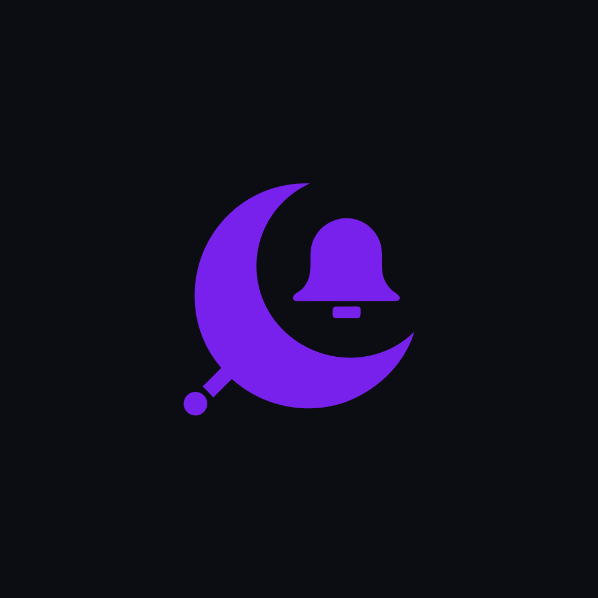

Known error classes are reproduced and traced by rules, so the same alert always gets the same answer. Attach the code named in the stack to get a unified diff and a regression test. Other errors are analyzed by Anna's LLM. Your code is never executed.
Paste the files named in the stack, each starting with a line // file: path/to/file.js, or give a public GitHub repo and Nightcall fetches them.
Ready.